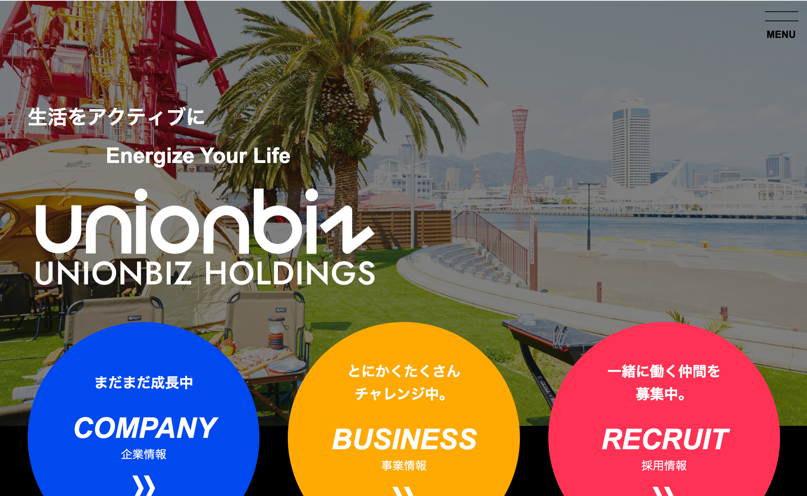

My WorksWebsite

- URL
- https://holdings-unionbiz.jp/
- 制作年
- 2025年
- 使用したツール
-
- Adobe Illustrator
- Adobe Photoshop
- Adobe XD
- WordPress
- 担当
-
- ディレクション
- デザイン
- WordPress
- 概要
- ユニオンビズホールディングス株式会社 コーポレートサイト のディレクションおよびWebデザインを担当しました。
「生活をアクティブに」という企業ミッションをもとに、誠実さや信頼感が伝わるコーポレートサイトを目指して制作を行いました。
ホールディングス企業として複数の事業を展開していることから、それぞれの事業内容が整理され、ユーザーにわかりやすく伝わる情報設計を意識しています。
デザイン面では、企業としての安心感を保ちながらも、堅くなりすぎないバランスを重視し、シンプルで視認性の高いレイアウトを設計。ブランドイメージに合わせた統一感のあるトーンで構成しました。
また、今後さらに事業やグループ会社が増えていくことを想定し、WordPress上で柔軟に情報追加・更新が行えるよう設計。デザイン性だけでなく、運用・管理のしやすさにも配慮したサイト構築を行いました。
ディレクションでは、サイト全体の構成設計やデザイン提案を担当し、企業の成長性や将来性を見据えたWebサイト制作に携わりました。